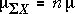
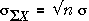

Verteilung eines Mittelwerts einer Stichprobe
In
einem
früheren Abschnitt haben wir erklärt,
dass der
Mittelwert einer zufälligen Stichprobe,  , eine Verteilung hat, deren
Mittelwert und
Standardabweichung abhängig von dem Mittelwert der Population,
μ und der Standardabweichung, σ, sind,
, eine Verteilung hat, deren
Mittelwert und
Standardabweichung abhängig von dem Mittelwert der Population,
μ und der Standardabweichung, σ, sind,
 = μ
= μ
 =
= 
| Die Standardabweichung des Mittelwerts der Stichprobe sinkt mit wachsendem n. |
|---|
Auch unabhängig von der Verteilung der Population nähert sich die Form der Verteilung einer Normalverteilung an, wenn die Stichprobengröße n, zunimmt (Zentraler Grenzwertsatz).
Summe der Werte in einer zufälligen Stichprobe
Ein Mittelwert der Stichprobe ist oft meist beschreibende zusammenfassende Statistik eine zufällige Stichprobe, aber gelegentlich ist die Summe der Stichprobenwerte nützlicher. Zum Beispiel, wenn die einzelnen Werte in einem Datensatz die bezahlten Beträge von Kunden in einem Supermarkt während eines Tages sind,
Die Summe der Stichprobenwerte ist das n-fache ihres Mittelwertes, so ist seine Verteilung eine abgespeckte Version der Verteilung der Mittelwerte - die gleiche Form, aber unterschiedliche Mittelwerte und Standardabweichungen.


Die Verteilung nähert sich auch einer normalen Verteilung an, wenn n steigt. Es ist wichtig zu beachten, dass, im Gegensatz zu dem Stichprobenmittelwert,
| Die Standardabweichung der Stichprobensumme mit wachsendem n steigt. |
|---|
Simulation zur Veranschaulichung von Verteilungen von Stichprobenmittelwert und der Summe
Das folgende Diagramm ermöglicht Proben von
verschiedenen
Größen von einer Standardnormalverteilung zu
wählen
(mit Mittelwert 0 und Standardabweichung 1).
Die theoretischen Normalverteilung des Stichprobenmittelwerts ist blau dargestellt, und die der Summe ist in grün dargestellt. Beachte, dass der Stichprobenmittelwert eine geringere Streuung als die Summe der Stichprobe hat.
Aktiviere die Checkbox Akkumulieren, klicke dann ein paar Mal auf Stichprobe ziehen, um verschiedene Stichproben der Größe 4 zu wählen. Beachte, dass die Probenahme-Verteilung zu der theoretische Verteilungen recht gut passt.
Wiederhole mit unterschiedlichen Stichprobengrößen.